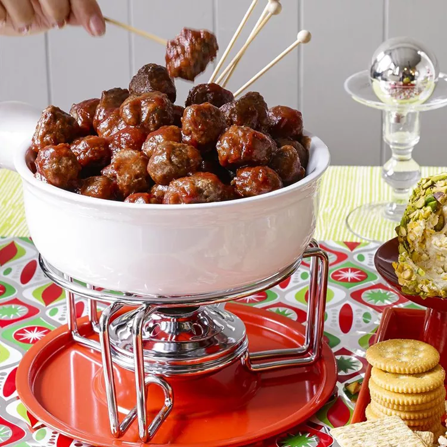

Cocktail Meatballs

Description
Эти вкусные фрикадельки в коктейле быстро исчезнут с вашего праздничного стола.
Моя мама готовит их каждый год на Новый год, а теперь и я тоже.
Ониотлично подходят для приготовления в мультиварке, так как вы можете потушить их перед подачей и сохранить горячими на протяжении всей вечеринки.
Ingredients
- 1 pound lean ground beef
- ½ cup bread crumbs
- 3 tablespoons minced onion
- 2 tablespoons water
- 1 large egg
- 1 (8 ounce) can jellied cranberry sauce
- ¾ cup chili sauce
- 1 tablespoon brown sugar
- 1 ½ teaspoons lemon juice
Steps
- Gather the ingredients. Preheat the oven to 350 degrees F (175 degrees C).
- Mix ground beef, bread crumbs, onion, water, and egg together in a large bowl.
Form into small meatballs and arrange on a nonstick baking sheet.
Bake in the preheated oven for 20 to 25 minutes, turning once.
- Stir cranberry sauce, chili sauce, brown sugar, and lemon juice together in a large saucepan over low heat until smooth.
Add meatballs; simmer for 1 hour before serving.
Addition